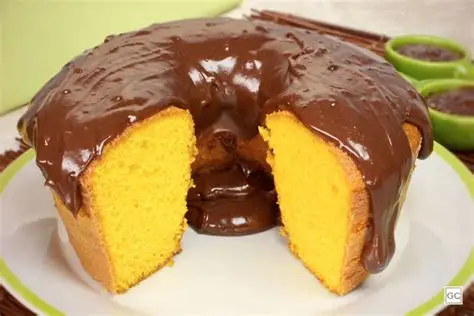

bolo de cenoura

- 4 ovos
- 1 Xicara de cha de oleo
- 1 colher de oleo de açucar
- 10 Cenouras fatiadas
- 2 xicaras de cha de farinha
- Colher de fermento em po (sopa)
- E 1/2 xicaras de farinha de trigo (cha)
- Cenouras medias raladas
- Xicara de oleo (cha) ½
- Deixar no forno 67ºgraus por 30 minutos
- Derreter barra de chocolate